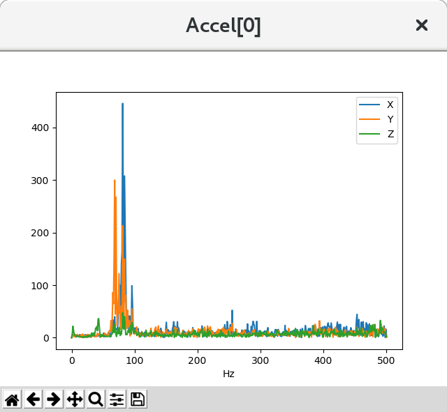

Measuring Vibration with IMU Batch Sampler¶
The IMU BatchSampler can be used to record high-frequency data from the IMU sensors to the dataflash log on the autopilot. This data can be analysed post-flight to diagnose vibration issues using graphs created from Fast Fourier Transforms (FFT) of the data.
FFT transforms data from the time domain into the frequency domain. Put another way, accelerometer data recorded over time (i.e. a flight) can be converted into a graph showing the frequencies of the vibration. A frequent feature of these graphs is a spike at the propeller’s “blade passage frequency” (the frequency at which the blade crosses over the arms) which causes an acceleration in the aircraft body. FFT has the following limitations:
- FFT cannot show you frequencies above half your sensor’s sampling rate
- The smallest frequency that can be shown is half your sample size divided by your sample rate
Samples are typically taken at the same rate as gyro updates provided to the autopilot. For example if you are using INS_FAST_SAMPLE on an MPU9250 sensor (fairly typical on modern Pixhawk class autopilots) then samples will be take at 8KHz. If you are not using fast sampling then sample rates of 1KHz are typical.
Pre-Flight Setup¶
- Set INS_LOG_BAT_MASK = 1 to collect data from the first IMU
- LOG_BITMASK’s IMU_RAW bit must not be checked. The default LOG_BITMASK value is fine. If it is checked the results can be confusing as you will get no samples if using post-filter or regular logging, you will however get samples if using sensor rate logging and your SD card is able to cope.
Flight and Post-Flight Analysis¶
- Perform a regular flight (not just a gentle hover) of at least a few minutes and download the dataflash logs
- Open Mission Planner, press Ctrl-F, press the FFT button, press “new DF log” and select the .bin log file downloaded above
{kind=link}
- Accelerometer data appears in the top left window with the vertical axis showing the amplitude and horizontal axis showing the frequency. The amplitude is not scaled to a useful value meaning the graph is useful for determining the frequency of the vibration but not whether the levels are too high or not. Vibration at frequencies above 300Hz may lead to attitude or position control problems.
- The default configuration shows raw accelerometer and gyro data before it has been filtered. Filtering is a key part of preventing noise reaching the PID loops and motors and thus it is important to be able look at the data after it has been filtered as well. In addition, when configuring advanced filtering using a notch (see INS_NOTCH_ENABLE) it is hard to do this effectively without seeing the output. In order to see post-filter output set INS_LOG_BAT_OPT = 2.
- For small copters in manual flight modes it is important to let as much signal through below about 100Hz and as little as possible above this. Configuring post-filter output will allow you to see this.
{kind=link}
Advanced Configuration and Analysis¶
- Set INS_LOG_BAT_OPT = 1 to enable batch sampling at the sensor’s highest rate which allows analysis above 500hz for very fast IMUs from InvenseSense
- INS_LOG_BAT_MASK can be used to sample just a single sensor. This will increase the number of samples retrieved from a single sensor (e.g. the best on the platform), which may provide better data for analysis
- INS_LOG_BAT_CNT specifies the number of samples which will be collected. Increasing this will yield a more representative idea of problem frequencies. When divided by the sample rate will give the lowest frequency which can be detected, so 1024 samples at 1024kHz sampling will (poorly) pick up 0.5Hz frequencies
- INS_LOG_BAT_LGIN interval between pushing samples to the dataflash log, in ms. Increase this to reduce the time taken to flush data to the dataflash log, reducing cycle time. This will be at the expense of increased system load and possibly choking up the dataflash log for other messages
- INS_LOG_BAT_LGCT Number of samples to push to count every INS_LOG_BAT_LGIN ms. Increase this to push more samples each time they are sent to the dataflash log. Increasing this may cause timing jitter, and possibly choke up the dataflash log for other messages
The following two graphs are from the same flight on a PixRacer autopilot. Accel[0] on the right is the InvenseSense IMU and shows higher frequencies than the slower IMU on the left

Log Message Contents¶
There are two types of dataflash log messages involved in batch sampling, ISBH and ISBD.
- ISBH is a batch header; it includes a batch number and metadata about the batch.
- ISBD messages contain the actual data for the batch, and reference a header by batch number.
Analysis with pymavlink¶
pymavlink is a developer focussed tool which supports graph FFT’d data
pbarker@bluebottle:~/rc/ardupilot(fastest-sampling)$ ~/rc/pymavlink/tools/mavfft_isb.py /tmp/000003.BIN
Processing log /tmp/000003.BIN
.Skipping ISBD outside ISBH (fftnum=0)
Skipping ISBD outside ISBH (fftnum=0)
Skipping ISBD outside ISBH (fftnum=0)
Skipping ISBD outside ISBH (fftnum=0)
Skipping ISBD outside ISBH (fftnum=0)
Skipping ISBD outside ISBH (fftnum=0)
...............................
32560s messages 48433 messages/second 1904039 kB/second
Extracted 10 fft data sets
Sensor: Gyro[0]
Sensor: Accel[0]
This output shows mavfft_isb.py extracting data from a single-IMU multicopter log.
{kind=link}
This multicopter frame clearly shows vibrations in the 80Hz range.

This multicopter frame clearly shows rotational vibrations in the 80Hz range.